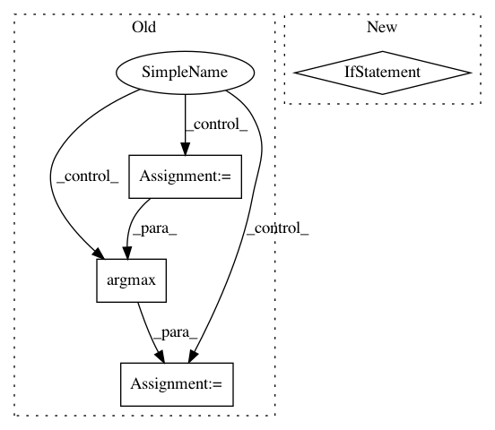

49a3ebf5f465bf4310cc55dc7e81ec2994c10154,paderbox/speech_enhancement/beamformer.py,,get_mvdr_vector_souden,#,627
Before Change
"Considering an independent dim in the SNR estimate is not "
"unique."
)
SNR = np.einsum(
"...FdR,...FdD,...FDR->...R", mat.conj(), target_psd_matrix, mat
) / np.maximum(np.einsum(
"...FdR,...FdD,...FDR->...R", mat.conj(), noise_psd_matrix, mat
), eps)
// Raises an exception when np.inf and/or np.NaN was in target_psd_matrix
// or noise_psd_matrix
assert np.all(np.isfinite(SNR)), SNR
ref_channel = np.argmax(SNR.real)
assert np.isscalar(ref_channel), ref_channel
beamformer = mat[..., ref_channel]
After Change
eps = np.finfo(lambda_.dtype).tiny
mat = phi / np.maximum(lambda_.real, eps)
if ref_channel is None:
get_optimal_reference_channel(mat, target_psd_matrix, noise_psd_matrix,
eps=eps)
assert np.isscalar(ref_channel), ref_channel
beamformer = mat[..., ref_channel]
if return_ref_channel:
In pattern: SUPERPATTERN
Frequency: 3
Non-data size: 4
Instances
Project Name: fgnt/pb_bss
Commit Name: 49a3ebf5f465bf4310cc55dc7e81ec2994c10154
Time: 2019-03-14
Author: heitkaemper@nt.upb.de
File Name: paderbox/speech_enhancement/beamformer.py
Class Name:
Method Name: get_mvdr_vector_souden
Project Name: ntucllab/libact
Commit Name: e81142f0869321cd8792e13bfc4f6fb85d9f1efc
Time: 2015-12-22
Author: yangarbiter@gmail.com
File Name: libact/query_strategies/uncertainty_sampling.py
Class Name: UncertaintySampling
Method Name: make_query
Project Name: pliablepixels/zmeventnotification
Commit Name: 1e619d91956c813d2328a5460da0a273fe135905
Time: 2019-11-15
Author: pliablepixels@gmail.com
File Name: hook/zmes_hook_helpers/face.py
Class Name: Face
Method Name: detect